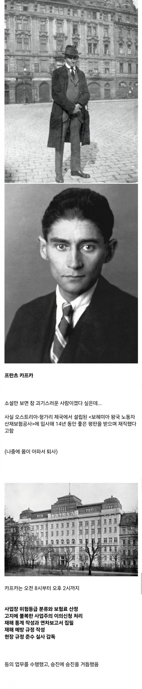
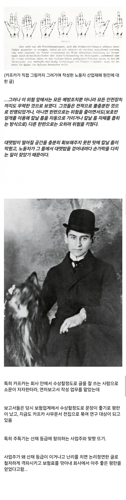
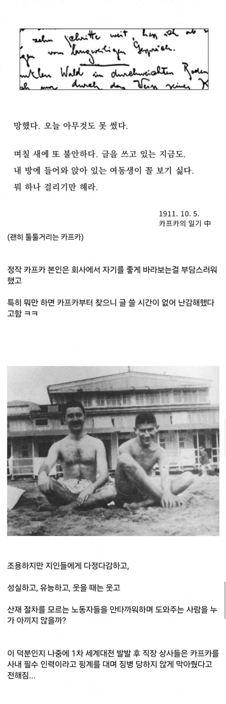

엄마가 낳은 아내
정답이다 연금술사 짤
여동생이 꼴보기 싫은데 여진족일리가 없잖아 ... ㅋㅋ
딱 봐도 츤데레네
8시부터 2시?
3시부터는 카페도 가야하고, 무도회 준비도 해야하고, 오페라도 보러 가야하거든

오헝특임ㅋㅋ
막막해서 쓴 글조차 명문이네 "내 방에 들어와 앉아 있는 여동생이 꼴 보기 싫다. 뭐 하나 걸리기만 해라."
굿맨이었군
학교다닐때 과제로나와서 억지로 읽었던 어떤 카프카 책의 마지막 문장이 "개같다!" 였던 게 생각나는데
여동생은 그냥 꼴보기 싫은게 맞음
인성 실력 갑이어도 여동생은 줘패고싶던 ㅋㅋㅋ
인류의 보물
카프카-변신-신도에루
님아
이제보니 괴벨스 조금 닮았네
저 시절에 노동자 산재보험공사가 있었네
잘나디 잘난 사람. 이름조차 간지
"심판" 이였나? 읽다가 대체 이 사람이 왜 유명한걸까 생각부터 들었는데ㅋㅋㅋㅋ
소송 잼게 읽었는디
사람마다 취향은 다른법이니까...
여동생 줘팸ㅋㅋㅋ
보험료가 아니라 보험금을 깎은거겟지
인성갑 카프카도 여동생은...
"여동생 이 새끼는 왜 집에 있는거냐"
진짜 이름조차도 멋있어. 어떻게 사람 이름이 프란츠 카프카
카프카킥!
확신의 신창섭 상이네 일 잘할듯
왤케 낭만임…
저때나 지금이나 사람생각은 비슷하구나 ㅋㅋㅋ 지금도 작업효율 올리려고 안전장치 꺼두거나 테이프 감아놓는다며
저 그림을 보면 똑똑한 사람들은 대부분 그림을 잘 그리나봐
슬픈사실 :
카프가는 3명의 여동생이 있었고 3명모두와 친했으나 2차세계대전때 3명모두 나치에게 잃었다
아...
카프카가 24년에 죽었는데 어떻게 2차대전 때 '잃었다'는 거임? 걍 카프카 사후에 동생들이 나치에 죽었다고 해야지, '잃었다'고 하면 카프카가 그 사건을 직접 겪은 것처럼 읽히잖아
해변의 카프카
개10에이스였네
댕댕이 가만히 있질 못해서 블러난거 귀엽네 ㅋㅋㅋ
수상할 정도로 글 잘 쓰는 근로복지공단 직원
ㅋㅋㅋ 여동생 걸리기만 해봐라 뭔데
그런 카프카도 여동생은 어쩔 수 없구나